Ache os
QRCodes
Cada local tem um QR Code com uma história,
cada história é traduzida em RA.
Veja a nosso Mapa particular no fim da página.

Igreja de São Francisco de Assis
Clique na imagemCasa do Aleijadinho
Clique na imagem
Museu da Inconfidência
Clique na imagemPraça do Tiradentes
Clique na imagemIgreja da Nossa Senhora do Rosário dos Homens Pretos
Clique na imagemHistória
e RA
Aumente a sua experiência com uma leitura.
Complemente com a experiência em RA.
-
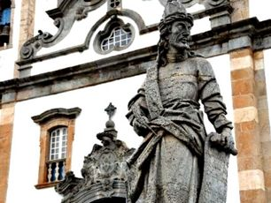
Aleijadinho e o Barroco
Fernando VasquezEstude sobre a vida de Aleijadinho e seu papel crucial no desenvolvimento cultural do Brasil - especialmente no período do Barroco, impulsionado pelo Ciclo do Ouro aqui em Minas Gerais.
-
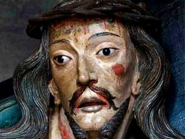
O verdadeiro Aleijadinho
Joao Pedro S.Este artigo traz uma perspectiva diferente sobre a vida do grande escultor Aleijadinho. Espero que gostem e apreciem a minha pesquisa sobre este grande expoente do Barroco Brasileiro e acima de tudo, mineiro.
-
O Barroco de Aleijadinho
Henrique D.BNeste blog post irei mostrar as principais caracterísiticas deste fantástico artista. Vamos adentrar no mundo do Barroco Brasileiro com o foco no Ciclo de Ouro em Minas Gerais.
-
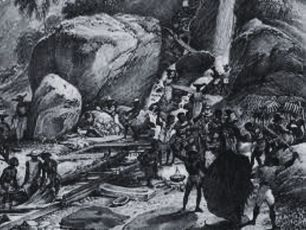
O Ciclo de Ouro Mineiro e o mundo
Osvaldo D.HMuito importante para a coroa Portuguesa pagar suas dívidas com a Inglaterra, o ciclo de ouro no Estado de Minas Gerais tem seu ciclo além do continente.
-
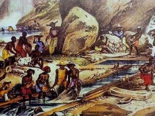
Características do Ciclo de Ouro, MG
Jean VasquezTrago uma análise técnica das técnicas de extração e a sofisticação (e a falta desta) no Ciclo de Ouro Mineiro, tendo sua má administração por parte da Coroa Portuguesa.
-
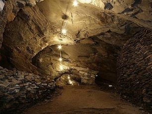
O Ouro do Brasil pelo mundo
Alexandre P.É muito forte pensar na influência do Brasil ao redor do mundo ao se considerar que sem o ouro aqui encontrado pelos portugueses, a Inglaterra jamais teria sido tão grande ao financiar seu imperialismo.
-
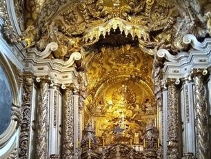
Barroco Brasileiro
Rodrigo U.Muito diferente do Barroco europeu, o Barroco Brasileiro - promulgado pela Contra-Reforma contínua da Igreja Católica e pelo Ciclo de Ouro Brasileiro - tem características únicas.
-
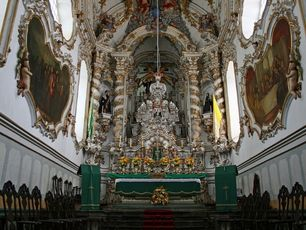
Viva o Barroco
Helton B.SContraste de cores, questionamentos, contra-reforma, dúvidas, desespero, humanismo... o caos do Barroco nos leva a pensar filosoficamente no nosso relacionamento com a fé.
-
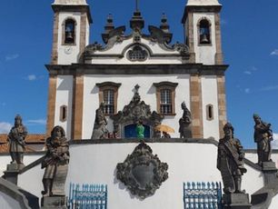
O ouro e o Barroco
Rodrigo F.Você já pensou em como o ouro influenciou o movimento artístico Barroco no Brasil? Por quê essa dependência? Como o Ouro traduz o contraste e o lado rebuscado do Barroco?
-
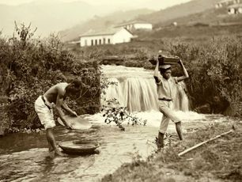
Escravidão e o Ciclo de Ouro Mineiro
Joao Paulo F.O Brasil - o país que chegou a ser o maior atuante no mercado da escravidão - fez amplo uso dos escravos africanos e indígenas no ciclo de ouro em todo o seu território. Vamos conhecer mais sobre isso.
-
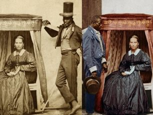
Fotos coloridas da escravidão
Gabriele M.Trouxe uma coleção de imagens recuperadas da época da escravidão no ciclo de ouro mineiro. Espero que gostem e que mostre o quão visceral a escravidão foi no Brasil.
-
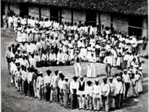
A vida dos escravos
Roberta M.Trago um artigo que irá mostrar como era a vida dos escravos no Brasil Império. Suas crenças, rituais e especialmente o seu trabalho forçado e como isso moldou o Brasil de hoje.
Mapa
do Tesouro
Cada pin possui um QR Code à sua espera.
Aprenda a história de Ouro Preto em RA.